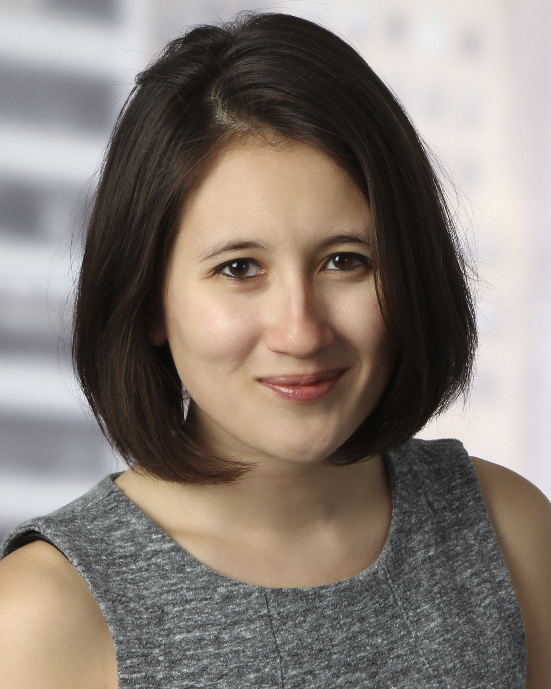
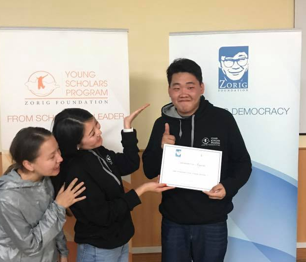

Our Mission
The Mongolian Young Scholars Program aims to identify and prepare promising Mongolian high school students for admission to leading U.S. and international universities.
About
The majority of Mongolian high schools currently lack formal processes for college counseling. Currently, most schools can only provide students with extra tutoring sessions for entrance exams required for admission to local universities. Although a growing number of Mongolian high school students would like to pursue higher education overseas, they lack the guidance and often do not know where to turn for advice.
Mongolian Young Scholars Program (MYSP) will help address this need and contribute to the development of a high caliber Mongolian workforce. By providing MYSP students with a high-caliber academic experience in liberal arts, MYSP participants gain an opportunity to sharpen their analytical reasoning, writing, and leadership skills, and improve their chances of success to enter and graduate from global leading universities.
The Mongolian Young Scholars Program is a weeklong intensive academic program intended to introduce Mongolian high school students to university-level liberal arts courses and provide guidance on the global college-admission process. At MYSP, students are exposed to the values of a liberal arts education provided through seminars taught by current Mongolian and international college students from top universities around the world, including Harvard, Stanford, MIT, Brown, and Princeton. Along with daily seminars, MYSP also includes daily college prep sessions on SAT, university selection, financial aid, college essay writing, and the admission process.
The program was established in 2011 by Tana Jambaldorj and Ram Sachs. In 2013, Zorig Foundation assumed responsibility for implementing the program. The Zorig Foundation is a Mongolian non-governmental organization dedicated to strengthen human rights, political freedoms, social justice, good governance, and democratic values in Mongolian society.
Our Team
Tana Jambaldorj
Founder & Head of Advisory Board
Tana is a founder and Head of the Advisory Board of MYSP. During college she served as a Seminar Leader for the Harvard Summit for Young Leaders in China in 2008 and 2010, which inspired her to want to create a similar educational program for talented high school students in her home country Mongolia. Tana completed her undergraduate studies in Economics with a Secondary Field in East Asian Studies at Harvard University and received her MBA from the University of Oxford. She is now working as a consultant with McKinsey & Company.

Claire Colberg
Member of Advisory Board
Claire Colberg is currently an Engagement Manager in McKinsey's San Francisco office. Claire began her career as a Business Analyst in McKinsey's Washington D.C. office, and also served as the Deputy Chief of Staff to McKinsey's Global Managing Partner. Claire has been involved with the Mongolian Young Scholars Program (MYSP) since 2011, and has served as both a Teaching Fellow (2011 and 2012) and Program Coordinator (2012 and 2014), before joining MYSP's Advisory Board. Claire graduated from Stanford University with a B.A. in International Relations and Honors in International Security Studies. Claire also studied modern languages, and is fluent in English and French, and speaks conversational Mandarin and Spanish.

Jantsankhorloo Amgalan
Program Coordinator
One of the first 30 students of MYSP, Jantsaa has returned to contribute to one of the most impactful programs of his life. Started as a student in MYSP 2011, he participated in the program again in 2015 as a Teaching Fellow, then as a Program Coordinator in 2016 and 2017. Jantsaa is currently pursuing a Bachelors Degree in Computer Science and Mathematics at Purdue University.